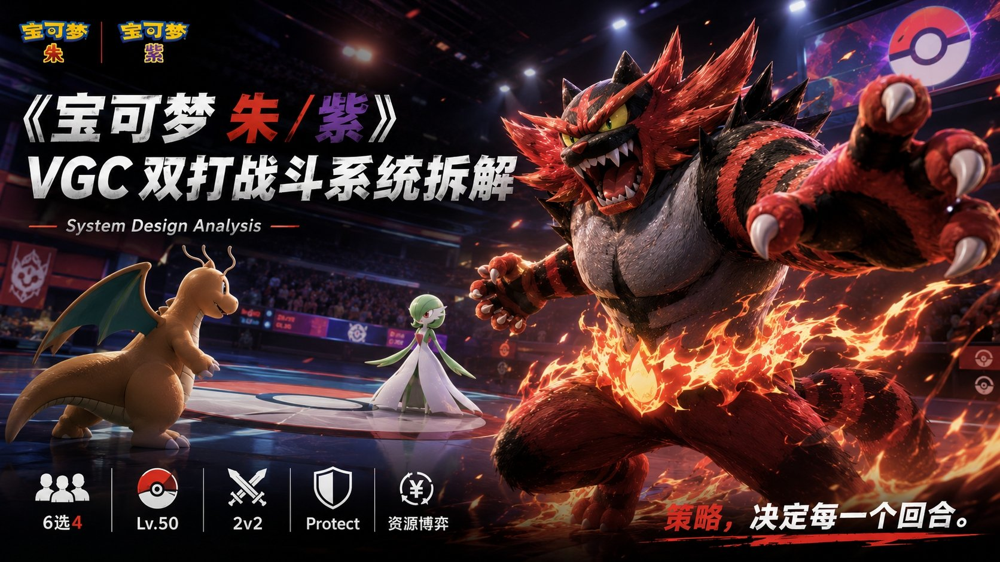

基于个人宝可梦对战天梯世界排名第42 的实战经验，围绕第九世代 VGC 双打规则，系统拆解回合制双打对战的策略深度来源。
项目概述
基于个人宝可梦对战天梯世界排名第 42 的实战经验，围绕第九世代 VGC 双打规则，拆解 6 选 4、Lv.50、2v2 对战中的站位协同、行动顺序、属性克制、替换轮转、资源分配与"守住"博弈，分析 VGC 为什么能在回合制框架下做出很高的判断深度。
核心分析维度
1. 系统结构拆解
从系统结构出发，分析选出阶段的信息隐藏、对局阶段的站位协同、回合内的行动优先级、资源交换与风险收益判断，总结其策略深度来源，形成一套回合制双打系统拆解框架。
2. 三大底层逻辑
- 属性克制 — 18种属性的克制关系构成对战基石，本系加成+克制=确认击杀的数值模型
- 替换轮转 — 通过主动/被动替换营造优势对位，折返类招式实现攻守一体
- 守住博弈 — 双打对战最具特色的机制，挡致命攻击、创净收益、拖有利回合
3. 长期生命力评估
从社交性、竞技性与创新性三个角度评估宝可梦对战系统的长期生命力，结合自身高分段对战体验与社区内容观察，分析其在玩家学习成本、竞技稳定性、环境多样性与内容传播上的优势和限制，为回合制战斗设计提供可复用参考。
关键发现
- 克制三角链 — 属性克制诱导轮转，轮转在守住回合获取净收益，守住防御属性克制攻击
- 轮转集大成者 — 炽焰咆哮虎充分利用轮转每个环节：折返退场、威吓登场、击掌先制
- 缺点分析 — 属性强度失衡、猜拳化博弈、随机因素过高等设计短板
- 改善方向 — 弱势属性补偿、守住冷却机制、反轮转工具再平衡
完整拆解报告原文
展开 宝可梦对战 - 深度体验和拆解分析报告（完整版）
摘要
没有弱小的宝可梦，只有弱小的训练家
从宝可梦的底层逻辑分析宝可梦对战为何成功
一、游戏概述
1. 游戏简要介绍
宝可梦系列游戏是Game Freak 开发、任天堂与宝可梦公司发行的角色扮演游戏。
本文将以宝可梦第九世代正作，《宝可梦 朱/紫》（Pokémon Scarlet/Violet）为例，深度分析宝可梦对战系统。
《宝可梦 朱/紫》于 2022 年 11 月 18 日在 Nintendo Switch 平台全球同步发售。本作是宝可梦系列第九世代的开幕作品，首次实现了真正意义上的开放世界玩法，并以伊比利亚半岛为原型的帕底亚地区为舞台。
简要信息：
- 游戏名称：宝可梦 朱（Pokémon Scarlet）/宝可梦 紫（Pokémon Violet）
- 版本信息：Nintendo Switch 独占，支持简繁中文/日/英/法/德/西/意/韩
- 游戏类型：开放世界角色扮演游戏（RPG）
- 开发商：Game Freak
- 发行商：任天堂/ 株式会社宝可梦（The Pokémon Company）
- 发售日期：2022 年 11 月 18 日
- ESRB 评级：E（适合所有人）
- 游戏人数：1 人（线下）/ 2-4 人（线上联机对战、交换、团体战）
2. 游戏题材和美术风格
游戏以帕底亚地区为舞台，该地区以现实世界的西班牙和葡萄牙所在的伊比利亚半岛为原型。整体美术风格延续了宝可梦系列明亮、鲜艳、可爱的视觉基调，角色设定由大村祐介操刀，宝可梦设计融合了西班牙本地文化元素（如弗拉门戈舞、斗牛、古典建筑等），呈现出浓厚的地域文化特色。
开放世界的视觉表现以自然地形探索为主，涵盖草原、沙漠、雪山、湖泊、森林等多种地貌。但由于 Nintendo Switch 硬件性能限制，画面存在远景细节缺失、帧率波动等问题。
3. 游玩说明
本报告的分析重点聚焦于宝可梦 朱/紫 的双打对战系统，即目前官方赛事（VGC，Video Game Championships）所采用的规则体系。分析者从宝可梦系列对战体系出发，结合本作机制深入体验了排位对战和队伍构筑过程。
4. 系统框架
宝可梦 朱/紫 的系统框架以开放世界探索为核心驱动，支撑两大纵向系统：收集与养成系统（捕捉、培养、进化）和对战系统（单打、双打、联网排位、团体战）。
本报告以双打对战（VGC 6 选 4 规则）为核心展开后续分析。
5. 游戏主要特色或者核心亮点说明
1. 首次开放世界：玩家可以按任意顺序挑战三个主线故事，打破系列传统线性流程。
2. 双打排位竞技生态：VGC 官方赛制的6 选 4 双打规则为宝可梦对战确立了深度策略竞技的行业标杆，本作的租借队伍系统进一步降低了新玩家入坑竞争的门槛。
3. 培养门槛大幅降低：超级特训（个体值调整）、性格薄荷、招式学习器的改进，使得将野生宝可梦培养到竞技可用状态的时间成本大幅降低。
4. 三线剧情结构：冠军之路、传说之路、星尘之路三条独立主线并行，丰富了单人游戏体验的层次感。
二、核心玩法说明
撰写说明：本章重点聚焦宝可梦 朱/紫 的双打对战体系，按照 VGC 官方规则（6 选 4、等级50、双打）进行分析。本章从核心体验出发，逐步深入到双打对战的基础机制、战术体系、队伍构筑和培养系统。
1. 对战玩法说明
将培养好的宝可梦组成6 只的队伍，在联网排位对战（VGC 规则）或线下对战中使用。每场对战从 6 只中选出 4 只上场，进行双打对战（即对战双方各派出两只宝可梦同时在场，形成 2v2 模式）。对战为 PVP 对战，1v1。有一方的宝可梦全部阵亡即视为失败。
2. 双打对战基础机制分析
系统定位：
双打对战是宝可梦官方赛事 VGC（Video Game Championships）的标准赛制，也是本作联网对战的核心模式。它要求玩家在队伍构筑和对战决策中同时考量两只宝可梦的协同配合，相比单打增加了站位、联防、资源分配等新的策略维度。
设计目的：
从1v1 单打升级到 2v2 双打，核心设计意图在于引入三个新维度：(1) 站位——两只宝可梦同时在场的协同与掩护关系；(2) 协同——全场AOE 招式、天气/场地、特性联动的战术组合；(3) 资源分配——每回合仅能对两只宝可梦各发出一项指令，需权衡输出、辅助、防守和切换的优先级。
在宝可梦对战中，每回合每位玩家可以进行三种大类操作，进攻（使用攻击技能造成伤害），变化（使用变化类招式创造对自己有利的环境），替换（替换宝可梦以应对场上的局面）。而这三种操作正好对应构成双打对战的三大底层逻辑——属性克制，守住，替换宝可梦。接下来分析者将会从构成双打对战的底层逻辑开始，分析双打对战。
属性克制：
宝可梦对战的基础是18 种属性的克制关系。每个属性对其他属性有三种可能的效果：2倍克制（效果绝佳）、1 倍常规（一般效果）、0.5 倍抵抗（效果不佳）以及 0 倍完全无效。每种宝可梦可以拥有最多两种属性，双属性宝可梦的克制关系为两个属性克制倍数的乘积，可能出现 4倍克制或 4 倍抵抗的情况。
宝可梦的属性克制体系很好的遵循了可信原则，大部分的属性克制原因都能在现实中找到对应，如：水能灭火，故水克制火；火能炼钢，故火克制钢；金属钢铁不怕蚊虫叮咬，故钢抵抗虫。这一设计很好的增加了游戏世界的真实性，增强了玩家的代入感，同时减少了玩家的上手门槛与学习成本。需要注意的是，属性克制与抵抗并非完全相对应，并非 A 克制 B，那么 A 就抵抗 B。如：地面系克制火系，但是地面系并不抵抗火系，火系抵抗妖精系，但火系并不克制妖精系，虫系与格斗系互相抵抗等等。这一设定使得属性克制链更有深度，很好的调节了克制关系。
属性克制是宝可梦对战的基石，是一个设计的很精妙的系统，玩家在对战场上的行动多数都是围绕如何创建一个好的属性对位而做，本文在下面提到的一系列操作，如：换人，先读，联防等，都是基于该体系，通过一系列操作，使自己克制对方，或者抵抗对方。属性也成为宝可梦评价体系中非常重要的组成之一，深刻影响着宝可梦的强度评价。当然一个宝可梦并不是仅仅能够使用自己本属性的招式，也可以学习其他属性的招式，来对抵抗自己属性招式的宝可梦打出克制效果，这种招式叫做补盲，如：轰擂金刚猩作为草属性的宝可梦，草属性的招式会被火属性抵抗，但是他可以通过学习十万马力（地面系招式，威力 95，命中率 95%）来反克制火属性宝可梦。
若宝可梦使用与自己属性一致的攻击招式时，伤害会 *1.5 倍，这也就是"属性一致加成"（本系加成）。那么为什么属性一致加成和属性克制在对战中如此重要呢，是因为宝可梦设计时会有一个基础模型，即在多数情况下，两个标准耐久的宝可梦在互相进攻时，使用最常见的 80威力左右的技能，只有打出克制+本系加成（2*1.5=3）造成三倍的伤害，即240 点伤害才能够保证能够一击秒杀（one hit KO）对方的宝可梦。在宝可梦的基础模型中，想要确定击杀一个标准耐久的宝可梦，往往需要 200-250伤害左右，这个为例刚好就是 70-90 威力的招式打出本系+克制后的伤害。那么为什么说属性克制是一个设计的很精妙的系统呢，是因为在大多数情况下，宝可梦是无法通过前文所提到的补盲招式，来实现完全的反克制，这是因为 70-90 威力的招式在没有本系加成的前提下，仅仅只有克制的140-180 的伤害，这个伤害在大多数情况是不足以击杀对手的宝可梦的，宝可梦设计者通过巧妙的数值设计，使得被克制的宝可梦并不是完全没有反抗能力，更使得克制的宝可梦能够拥有一个稳定的击杀概率。那么我们处在劣势的克制关系中时，应该如何逆转形式呢，这就是宝可梦对战的另一个底层逻辑——替换宝可梦。
替换宝可梦：
替换宝可梦是在对战中替换当前在场战斗的宝可梦的操作。分为主动替换和被动替换两种形式。
主动替换宝可梦是指在对战菜单中选择"宝可梦"选项进行宝可梦替换。替换需要耗费 1 回合。
被动替换宝可梦则是由于招式效果（如：伏特替换，抛下狠话，吼叫）、道具影响（如：红牌，逃脱按键）、特性（如：危险回避）和昏厥而进行的替换。
玩家通过主动或被动的替换宝可梦（以下简称替换），使得场上形成对自己有利的局面。作为三大底层逻辑之一，替换在宝可梦对战体系中占据重要意义。在前文我们提到本系+克制能够确认一击必杀（下文简称确一）对方的宝可梦，而仅仅靠属性克制无法完成，那么我们就需要通过替换宝可梦来营造优势对位，能够营造优势对位主要取决于三点。
1. 大部分属性克制对方的宝可梦的宝可梦，同时也抵抗对方，这使得耗费一回合所带来的代价（承受对方宝可梦的一次攻击）并没有那么难以接受。
2. 新换上场的宝可梦大概率没有经历过属性降低（如物攻降低，速度降低），同时新换上场的宝可梦也可以借此机会清除自身的负面效果（如：恢复被降低的能力，解除"再来一次""挑衅"等状态）。
3. 新换上场的宝可梦能够通过本系+克制确一对方的宝可梦。
通过这些因素我们可以得知替换操作具有非常重大的战术价值，那么是不是可以无脑选择替换呢？答案是否定的。替换（轮转）产生的效果具有滞后性，更换完场上的宝可梦以后，对位的优势变更需要再下个回合体现，那么对手就可以趁这个回合来预读或强化，使得对位优势没有那么明显。
那么单纯的替换宝可梦不仅意图明显，还亏回合，对手也有应对方案，那么有没有办法同时完成进攻/变化与替换呢，答案是肯定的，这就是前文提到的招式效果带来的替换。
这类招式我们称之为折返类招式。折返类招式的存在让轮转这件事有了更多可能性。如：后手交换（正常的交换行为会发生在整个回合开始前。而像mega进化、极巨化、钛晶化等都发生在回合开始时。这就导致被换上来的宝可梦总是要先挨一顿打。而如果你能够后手使用折返招式，那挨打的就是使出折返招式的宝可梦。被替换上场的宝可梦就能以满状态加入战斗）这个价值是巨大的，尤其是对于那些脆皮宝可梦或者携带气势披带来说。
折返类招式有很多，但大体上可以分为两类。一类是攻击型。它们分别是疾速折返（虫返）、快速折返（水返），伏特替换（电返）。归属于虫、水、电三系。这类技能的最大特点是必须要成功命中才能够触发后续的替换效果。你的攻击无效或者是由于回避率问题挥空，都会导致无法正常触发轮转效果。所以这三个属性的配置也很好的体现了设计者的设计思路。无论是水系还是电系。都有专门的特性可以吸引并免疫。水系是引水，电系是避雷针。更有意思的是，在这个游戏里，有且仅有水和电这两个属性存在这种类型的特性。
这就体现了设计师在属性平衡上面的巧思，折返类技能本质上讲就是为了下场，顺便蹭点血，只要能够成功打出替换效果就行。左边的精灵免疫我打右边那个就行了。而这种情况下，避雷针和引水的存在相当于直接封死了使用对应属性折返招式的可能性。这时候虫返的价值就体现出来了，因为这个游戏没有一个特性可以吸引虫系技能。虽然虫系的打击面较差。但作为折返类招式不会被免疫和吸引。是他最大的优点。
除了攻击型折返招式以外，还有一类变化型折返招式。他们分别是瞬间移动、接棒、抛下狠话、断尾，冷笑话。这类折返类招式都拥有在替换下场的同时为己方创造优势条件的额外效果。尤其是接棒这个招式，它能够传递正向buff 的特殊效果（自身替换宝可梦下场，训练家选择队伍中另外一只宝可梦上场。能力变化、以及部分的状态变化会传递给交换上场的宝可梦。），极大丰富了宝可梦游戏的战术可能性。甚至可以说，许多精灵正是凭借这个招数才有了上场可能性。加速（持有该特性的宝可梦每回合结束速度上升 1 级）这个神奇特性也因为接棒有了进一步发挥的空间。抛下狠话可以降低对手的双攻，为后备宝可梦创造了更安全的登场环境。断尾能够让后备宝可梦带着替身上场。防止对手利用交换的回合使用变化招式。总之，一切都是为了交换这个行为服务的。即改变当前劣势局面过渡到优势对位。
因为交换这件事在对战中频繁发生，虽然也有利用交换过程本身来获取收益的宝可梦，但是某些在交换时触发的特性，其价值甚至会超过交换行为本身。
交换过程中一共存在两个时机，原宝可梦退场和新宝可梦登场。在退场时获取收益主要依靠那些折返的招式，而新宝可梦要在登场时获取额外收益，一方面可以借助那些只在登场时发动的招式击掌奇袭、迎头一击、掀榻榻米等，当然更主要是依靠一些登场时触发的特性。能够在轮转中触发了这些特性的典型代表是威吓、再生力、款待，当然还有降雨、日照、降雪、扬沙等天气类特性，以及各种场地特性，如电气制造者，青草制造者等。
我们重点来说威吓、再生力、款待这3 个特性。首先最重要也是最早出现的登场特性——威吓（出场或获得此特性时所有攻击范围内的对手的攻击下降 1 级）。无数精灵凭借它才得以在对战中频繁登场，从暴鲤龙，风速狗，到战舞郎土地云，尤其是像战舞郎这样种族值极低的精灵。没有威吓的话几乎没有对战价值。战五郎种族值总量才 450，因为有威吓特性和登场才能发动的击掌奇袭就有了登场机会。
由此可以引出轮转的集大成者——炽焰咆哮虎。他可以说是轮转机制的最大受益者。他几乎充分利用了轮转过程中的每一个环节，急速折返，抛下狠话退场，威吓登场，回合开始击掌奇袭。本身6抵抗一免疫的优质抗性和御三家等级的身板，也给了他大量适宜的登场时机。不仅如此，炽焰咆哮虎还有着120 的本系闪焰冲锋，使得他不是纯粹的辅助，能攻能守，可以说这就是最理想的队伍润滑剂了。
再生力（交换下场时，回复自身最大 HP 的 1/3。）这个特性也是能满足轮转需求的强力特性，一般情况下在对攻中被打残的精灵。即使替换下场，由于本身血线已经被压低，重新上场的回合还要再承受一次伤害，难度有点过于高了。而再生力能够回复 1/3 的 HP，这就让拥有这个特性的宝可梦可以通过反复上场、退场不断的承受伤害。只要单次攻击不过半，再生力就可以支撑起至少 4~5 个回合的续航。
款待（出场时款待同伴，使其回复最大 HP 的 1/4）更是能够直接支援仍然在场上的队友。由于交换这个动作的优先级非常高，这1/4 的血条相当于是凭空变出来的，可以先回复再挨打。这是来悲粗茶（款待特性拥有者）相比败露球菇（再生力特性拥有者，下文简称盾菇）的一大优势。
那么轮转体系如此强大，就没有能够反制的手段吗，答案是肯定的。有很多特征都可以在一定程度上打断这个行为。首先就是踩影（使对方全部不持有踩影特性的非幽灵属性宝可梦处于无法逃走状态，无法替换或逃走），沙穴（使对方所有非幽灵属性的地面上的宝可梦处于无法逃走状态，不能替换或逃走），可以直接阻止对手交换，自踩影诞生以来一直是S 级特性，阻止对手的替换，自己却可以随意替换，超级耿鬼正凭借这个特性成为了 mega 界数一数二的强者，哪怕他的耐久本身其实并不高，也由此诞生了超级耿鬼公式（如果你不是鬼系，那么我不让你替换；如果你是鬼系，那么我可以用克制你的鬼系技能打死你）。
沙穴属于弱化版的踩影，只能阻止地面上的宝可梦交换，但是依旧十分强力，毕竟地面上的宝可梦占了这个游戏的大多数。
当然这个效果也不是必须特性才能达成，许多招式也可以让对手陷入无法逃走的状态，比如说熔岩风暴，火焰漩涡，这一招式可以在一定回合内阻止对手替换宝可梦，并造成一定伤害，也是比较常用的限制轮转的手段，不过这些特性和招式虽然能阻止对手手动替换宝可梦，对那些折返的招式却起不到作用。
这也算是折返类招式的一个隐性收益。而针对折返类招式也有特定的方法，就是本文前面说的引水对快速折返，避雷针对伏特替换，宝可梦对战就是这样一个见招拆招的游戏，无论多么强力的精灵打法，总是有能够针对和克制的技巧。
当然除了以上直接阻止替换的特性，还有一个针对替换操作的招式追打，当对手替换宝可梦上场时，使出此招式的话，能够先于替换行动以两倍的威力进行攻击，把人打死了，他一样没法安全退场。这也是唯一一个优先级比替换宝可梦还要高的招式，配合先制技能突袭，经常能对血线不高的精灵达成两头堵的效果，让对手打也不是，跑也不是。
除了这些针对宝可梦退场的特性和招式，我们还有用来应对新精灵登场的手段，主要是那些对入场宝可梦生效的招式，比如撒菱，隐形岩，毒菱，黏黏网。
还有个操作叫逼换，是轮转玩法的另一个侧面表现，具体表现为这个对位我虽然不占优势，但我通过其他手段让你不得不换。最经典的例子就是哈欠，让对手在一回合后陷入睡眠状态，只要还有轮转空间，没有人会愿意白白陷入睡眠状态。除此之外，还可以给对手上debuff，如威吓，怪异电波等都是很典型的能够逼对方替换打手的操作。打手一旦失去输出能力，就很容易陷入不得不下场的尴尬。另外还有一些封锁招式的技能也可以达到这样的效果，比如说能够封住所有变化招式的挑衅，能够封住上次使用招式的定身法，能够封住所有自己掌握的招式的封印等等。
当然也有更直接的手段，吼叫，龙尾等招式可以直接让对手宝可梦强制退场了。这也是一种改变当前对位劣势的手段。
作为游戏的底层逻辑，替换宝可梦使得对局增加了博弈与预判，增加了玩家之间心理战的成分，但同时也有使游戏陷入猜拳的缺点，这点在下文会有更详细的阐释。
守住：
守住（在当回合内，使自身进入守住状态，保护自身不受到来自其他宝可梦的大部分招式的影响。）作为宝可梦对战中最具特色，也最具影响力的变化类技能，守住与属性克制和替换宝可梦一起，成为构建对战系统的底层逻辑之一。设计者设计守住这个技能，很大一部分是取材于日式传统 RPG 中防守类招式，但也在此融入了自己对宝可梦对战的理解，守住的设计目的包括但不限于，增加对局的多样性，增加对战双方的博弈，降低对局节奏，限制部分特定的体系（如：顺风、戏法空间等），增加单体技能的风险，从而限制其强度等。
守住不仅是一个招式，更是一种思维。守住的学习面极广，除去一些极个别的宝可梦，99% 的宝可梦都能学会这个招式。接下来分析者将会分析会用到守住的几种场景。
第一种，挡住对方致命攻击
这是一种比较常见的情况，我们举个例子。假设场上存在我方宝可梦 A，B；对方宝可梦 C出手顺序分别是（C 最先，B 其次，A 最后）但是 A 和 B 的血量都很低，无法承受 C 的一次攻击，这个时候我们只需要让被C 攻击的单位使出守住，这个时候该单位不仅幸免遇难，同时另一个没有使用守住的单位可以借此机会进攻 C。它揭示了双打的一种基本思维。那就是双打，不是单打独斗。队友之间是存在配合的。
第二种，挡住对方集火，创造净收益
假设场上存在我方宝可梦 A，B；对方宝可梦 C，D，出手顺序分别是（C 最先，B 其次，D 再之，A 最后）那么场上可能会出现这种情况，由于 A 的出手权顺次最靠后，那么 C 和 D 就可以通过集火秒掉 A，从而让 A 无法使出技能，这个时候我们只需要让 A 使用守住，这样 A 就可以从对方的集火中幸存下来，同时 B 就可以拥有一个安全的回合来进行输出或者强化。这样算下来，相当于场上这回合 ACD 都没有行动。但是我方的 B 是行动了的，实现净收益的创造。
第三种，抵挡队友的 AOE，防止友伤
这种很好理解。宝可梦里有很多打击全场的技能，比如地震、冲浪。这里的全场是包括我方队友的。这时，如果你不想让队友跟着对面一起挨打，就需要让他点一下守住。
第四种，拖掉对面的各种状态
在宝可梦对战里，很多队伍就会制造对自己有利的状态。比如天气、场地、顺风、戏法空间等，这些状态一般持续 4~5 回合。如果我们能用守住拖掉对面的有利状态，就可以大大削减对面的战斗力。实际上顺风空间和天气都是很短暂的。利用守住可以有效的拖过对方的有利回合。
守住这一技能使得对战变得更复杂，使得双方无法想杀谁就杀谁，在进行攻击前必须要考虑对方是否会使用守住，使对局增加了博弈成本，不仅提升了可玩性，更是大大提升了玩家先读成功后的成就感。
3. 缺点分析
那么这些设计就是完美的，没有缺点的吗？显然并不是这样的，这三大底层逻辑都有着自己独特的缺点。
属性克制最明显的缺点就是属性之间的强度过于不平衡，作为全游戏最强大的属性，钢属性拥有 10 个抗性，1 个免疫，却仅仅只有 3 个弱点。而最弱小的属性，虫属性虽然拥有 3 抗性和 3弱点，在进攻端却被8 个属性抵抗，仅能对3 个属性造成克制伤害。一些热门的属性，如：钢，火，妖精，往往拥有优秀的抗性和打击面，但是弱小的属性，如：岩石，虫，往往在打击面或抗性上有着致命缺陷。不可否认的是，为了遵循设计的可信原则，部分属性确实会稍微吃一些亏，但是宝可梦的属性强度的不平衡已经接近不合理的程度了，尽管设计师为了平衡虫属性，给了其一些非常强大的招式，如：蝶舞（令使用者的特攻，特防，速度各提升 1 级）、萤火（令使用者的特攻提升 3 级），但仍旧无法解决虫属性在对战中过于弱势的地位。这也使得钢属性的宝可梦天生就高虫属性的宝可梦一等，不仅损坏了对战的环境，降低了对战的多样性，更是让宝可梦之间的平衡性设计成为了灾难。
替换宝可梦的缺点较为隐蔽，首先就是换人的设计有时会让玩家陷入无意义的猜拳中，而这种猜拳往往会影响整局游戏的胜负，很多时候在前面完成的一系列细节操作，建立起来的优势，在一次失败的猜拳后不仅化为了乌有，还使自己陷入了一个非常被动的境地。很难说毁掉整局游戏的设计是一个优秀的设计。同时在宝可梦对战中，轮转体系过于强大，而反轮转则具有比较明显的局限性。宝可梦对战是一个见招拆招的游戏，有轮转的手段，自然也有反轮转的手段，但是使对方无法替换的技能优先级永远比替换低，这就导致永远都是对方完成替换后，你再使用招式困住对方替换上来的宝可梦。同时这一类技能往往有着学习面差，威力不高，命中率不满等一系列的缺点，不论是稳定性还是强度都很难达到一个令人满意的程度。而踩影，沙穴这种特性又过于一刀切，完全破坏了替换这一底层逻辑，使得设计师对于这类特性给予的十分谨慎，在对战中也鲜少看到这类特性出场。
守住的缺点主要源自两方面，一方面是对连续守住的设计，连续使用守住时这次守住的成功率将会成为上次守住的 1/3，第一次守住的成功率是 1，第二次是 1/3，第三次是 1/9，这就导致在部分情况（如：只剩两回合的顺风或戏法空间），劣势的一方可以通过双连保，实现从必输到必胜的翻盘。守住的设计之初是为了拥有一次防守的机会，而非通过连续的守住硬拖对方的优势回合，在竞技类游戏中，应尽可能的降低运气因素对于游戏结果的影响，而连续守住这一设计将游戏胜负完全与运气绑定，不仅极大地增强了玩家在失败后的挫败感，也让竞技对决变为靠运气的赌博，这在一个合理健康的竞技游戏中是很难接受的。
守住的另一方面源于武道熊师对该规则的彻底打破，武道熊师的特性无形拳能够使接触类招式完全无视守住，直接对宝可梦造成全额的伤害，诚然，设计师最初的设想是打破守住即无敌的思想钢印，为对战环境增加更多的变数，但这失衡的数值设计也在后续的平衡性调整中被证实是一个失衡的设计，在宝可梦冠军推出后，武道熊师的无形拳被削弱为只能对守住的目标造成 1/4 的伤害，这个数值设计又显得过于保守，使得明明是克制守住的特性，却无法对守住造成有效克制，守住带来的收益过于巨大和稳定。
除此之外宝可梦对战还有一些设计上的缺点，如：随机因素在游戏中占比过大，博弈过于二元化，宝可梦设计本身的问题——如双刀分配的宝可梦在双打中天然处于劣势，这些因素由于篇幅原因在此就不展开细说了，可以参考本人在B 站上发布的《揭秘！为什么宝可梦对战不火？多角度深度分析！》（BV1bGFZz8Esv）了解更多关于宝可梦对战的设计缺点。
三、游戏整体评价
1. 游戏优势
综上所述宝可梦作为世界第一大 IP，在第九代加入了开放世界以后，无论是可玩性还是玩家的游玩时长都有了较大的提升，而在宝可梦对战方面，市面上依旧没有一款合格的竞品游戏，使得宝可梦对战在回合制策略对战领域形成了垄断。宝可梦对战在最近的世代也一直致力于通过创新机制（如：极巨化，太晶化），来为游戏增加新的内容。宝可梦对战的主要优势在于社交性，竞技性，创新性。
社交性主要体现在宝可梦广泛的 IP 受众，这使得宝可梦对战可以很好的通过用户裂变来拉新，同时因用户裂变吸引来的新玩家由于有老玩家带着，更加容易克服前期的学习成本，成为核心用户后，也更容易再次引发新一轮的社交裂变。
竞技性则主要体现在围绕三大底层逻辑的整体框架，通过属性克制来诱导轮转，通过轮转再在守住的回合获取净收益，同时守住对方的属性克制攻击形成克制三角链（即属性克制轮转，轮转克制守住，守住克制属性）这种三角的竞技设计不仅体现在底层逻辑上，更体现在属性的设计上，如：火系克制草系，草系克制水系，水系克制火系；再比如格斗克制恶，恶克制超能，超能克制格斗。这种设计很好的维持了竞技的平衡，也为对战增加了更多的博弈因素，使得竞技性更高。同时围绕着这底层的三角能够衍生出更多额外的玩法：如击掌奇袭，顺风，戏法空间，灭歌体系等，进一步加深了游戏的深度，也为宝可梦的电竞化进一步奠定了基础，不仅基于此推出了 VGC 规则，也使得一年一度的 WCS 更具有竞技价值与看点，成为海外经久不衰的经典电竞赛事之一。
创新性则体现在玩家与设计师两个角度，从设计师的角度来说，每个世代推出新的对战系统已经成为定律，这不仅为有效延长了游戏的生命周期，更是能够引起更多玩家的兴趣。而玩家角度的创新则更多地体现在利用现有的环境与宝可梦，去进行组队，打法上的创新，这使得游戏的队伍体系出现更多变化，增加环境的活力，同时新阵容，新打法的产生也会为玩家社区进一步的注入活力，增加社区内部的讨论度，在另一方面也可以促进创作者的产生与发展。可以说，创新性就是宝可梦对战经久不衰，历久弥新的最重要的法宝之一。
2. 游戏劣势
世界上没有十全十美的事物，更没有十全十美游戏。宝可梦对战的缺点也较为明显，除了上文详细提到的平衡性和猜拳的问题，宝可梦对战中另一个较为突出的缺点就是随机因素在游戏中的占比过高。随机性不仅仅体现在某个技能的命中率上，随机这一要素已经浸入到宝可梦对战的每个方面，比如技能的命中率，技能的附加效果的成功率，触发异常状态的概率，击中要害的概率，甚至同样的宝可梦释放同样的技能，打在同样的宝可梦身上造成的伤害都有一个随机数区间，运气好就有可能打死，运气差就有可能打不死，这种输出随机性对于追求竞技稳定性的玩家是毁灭性的。如果拿象棋来做比喻的话，一个象棋高手，通过计算得出来自己用车吃掉对面的小兵是最优解，结果车因为 5% 的打空概率没有命中，而对面小兵正常来说是打不死车的，但是好巧不巧攻击正好触发了 6.25% 的击中要害，反而反杀了，这种情况给玩家，特别是给竞技玩家带来的挫败感是极深的，玩家缜密的计算在随机的概率面前不值一提。而这种概率甚至会直接影响全球锦标赛的决赛。
2014 年的全球锦标赛决赛，能称为宝可梦对战史上最有名的一场决赛，Sejun Park 的沙奈朵抗住了 mega 路卡利欧的一发适应力子弹拳，按照赛后爆出的努力值分配来看，沙奈朵仅有 31.2% 的概率接下这发子弹拳，但是出人意料的是沙奈朵接下了这发子弹拳，随机数区间随机到了一个较小的数字，这直接导致 Sejun 获得了世界冠军，这种无关技术能力，纯粹的运气因素会主导世界总决赛的决赛，这在竞技类游戏中是难以想象的。
这种因为运气因素输掉游戏所带来的挫败感，能够抵消连赢三四把游戏所带给你的正向反馈，而这种情况往往会给玩家带来巨大的情绪冲击，会非常打击玩家的游戏积极性，很多玩家也正是因为难以忍受这种随机数选择了退出宝可梦对战。
3. 改善意见
首先，关于数值的推敲必须经过更多的测试。正如前文提到的武道熊师的无形拳的数值，1 的数值则太高，1/4 的数值又太低，设计师需要好好做好关于数值的平衡，1/3 的设计也许会更加具有可行性。
其次，应该对弱势的属性进行更多的平衡性调整，诚然，改变属性克制关系的实行难度较大，我们也可以通过增加强力技能与特性，更加优秀的种族值分配等方法使弱小属性的宝可梦也有登场的机会，像虫属性的宝可梦在对战中的影响力过低，则可以通过特定的手段来改善这个处境。
4. 总结分析
《宝可梦 朱/紫》作为宝可梦系列第九世代的开篇之作，不仅在开放世界设计上实现了系列历史性的突破，更在双打对战系统上延续并深化了宝可梦对战的策略性与竞技性。通过对属性克制、替换宝可梦、守住三大底层逻辑的系统拆解，可以看出，宝可梦对战并非简单的数值比拼，而是一个高度依赖信息判断、资源管理、心理博弈的深度策略体系。
优点方面，宝可梦对战在设计上展现出极高的系统自洽性与扩展性。属性克制体系虽源于直观的现实的可信因素，却通过对战中的本系加成、补盲招式、联防配合等机制，构建出复杂的战术网络。替换与轮转机制则为对局注入了节奏变换与心理博弈的维度，尤其是折返类招式、登场特性（如威吓、再生力）与反制手段（如踩影、追打）之间的互动，形成了极具深度的"攻防转换链"。守住作为双打对战的"第三极"，有效调节了攻击节奏，为策略执行提供了缓冲空间，也衍生出大量围绕保护、集火、拖回合的战术打法。
然而，该系统在当前版本中也存在的明显短板。属性之间的强度失衡（如钢系过强、虫系过弱）导致部分宝可梦与战术被边缘化，影响了环境的多样性与平衡性。替换机制虽有深度，但在高对抗对局中容易陷入"猜拳化"的博弈困境，反轮转手段的强度与稳定性仍有不足。守住虽设计巧妙，但连续守住的概率机制引入了不可忽视的运气成分，影响了竞技的公平性与玩家的正反馈体验。此外，随机数、命中率、击中要害等概率因素在高水平对局中仍可能主导胜负，削弱了策略决策的价值感。
改善方向上，建议开发团队在未来的世代中加强对弱势属性（如虫、岩石）的机制补偿，例如通过专属强力招式、特性或道具提升其出场价值。对于守住连续使用的概率机制，可考虑引入"连续使用惩罚"与"冷却机制"相结合的设计，降低运气翻盘的可能性。同时，针对反轮转手段（如踩影类特性与招式）的强度与可用性进行再平衡，赋予玩家更多主动破坏对手轮转节奏的工具。
总体而言，《宝可梦 朱/紫》的双打对战系统在策略深度、竞技性与社交传播层面均展现出极高的完成度与行业标杆价值。尽管存在平衡性、随机性与节奏控制等方面的不足，但其核心机制的自洽性与持续迭代的创新精神，仍使其在全球范围内保持强大的生命力与影响力。对于策略游戏研究者、对战玩家或游戏设计从业者而言，宝可梦对战系统无疑是一个值得深入剖析与借鉴的经典案例。